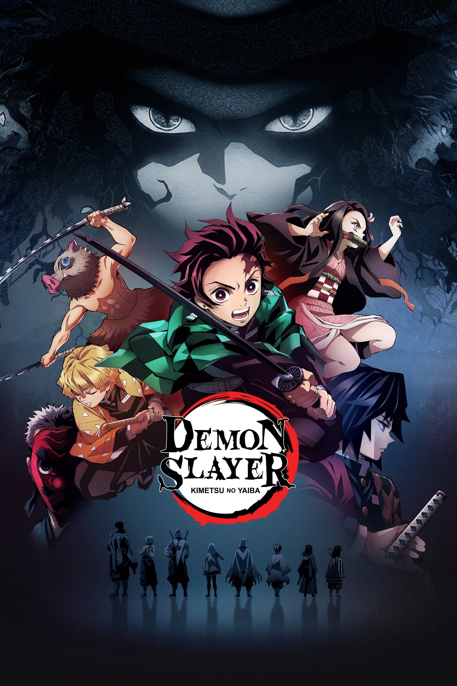

Início
Lançamentos
Filmes
Séries
Termos de uso
Entrar
Japão, era Taisho. Tanjiro, um bondoso jovem que ganha a vida vendendo carvão, descobre que sua família foi massacrada por um demônio. E para piorar, Nezuko, sua irmã mais nova e única sobrevivente, também foi transformada em um demônio.
📺 Assistir agora
🎟️ Adicionar á fila
Animações
